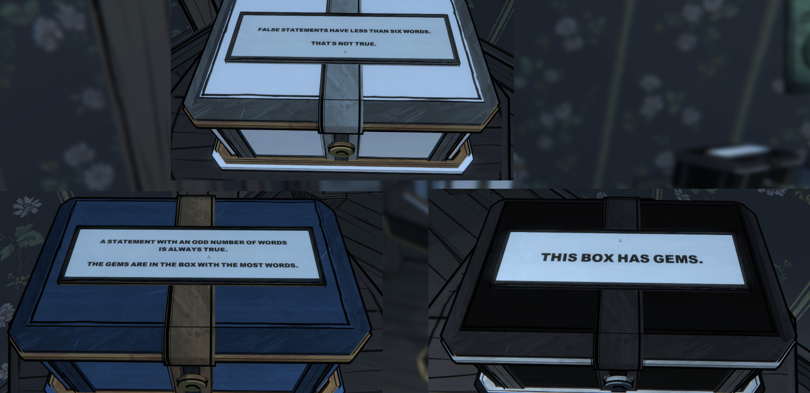
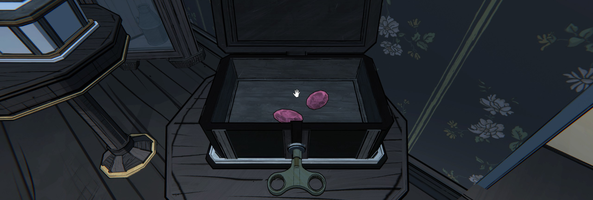
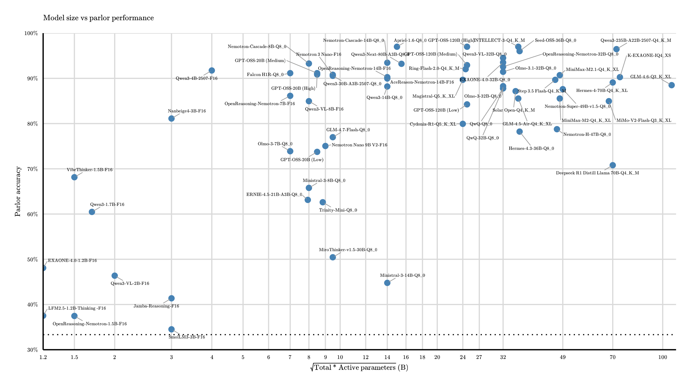
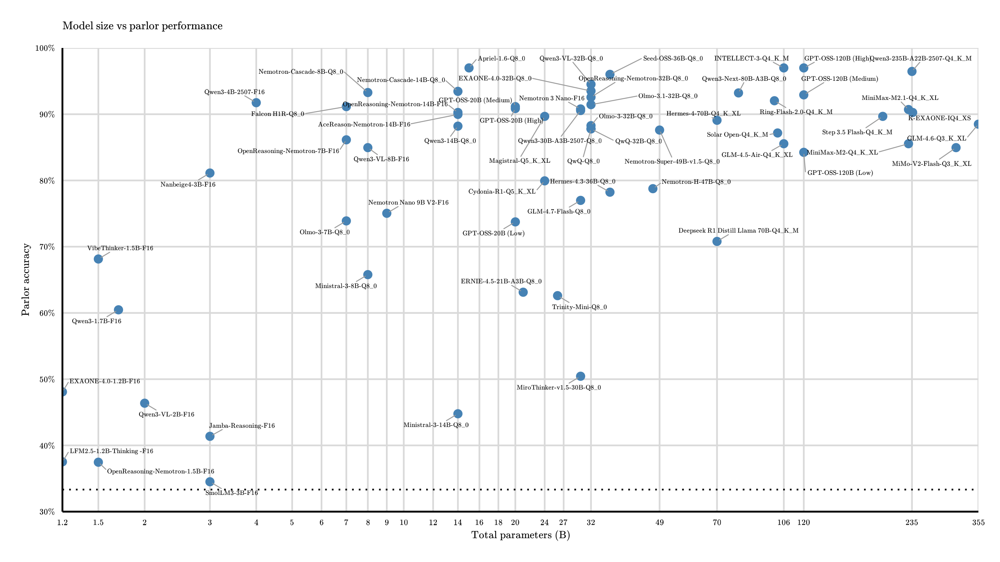
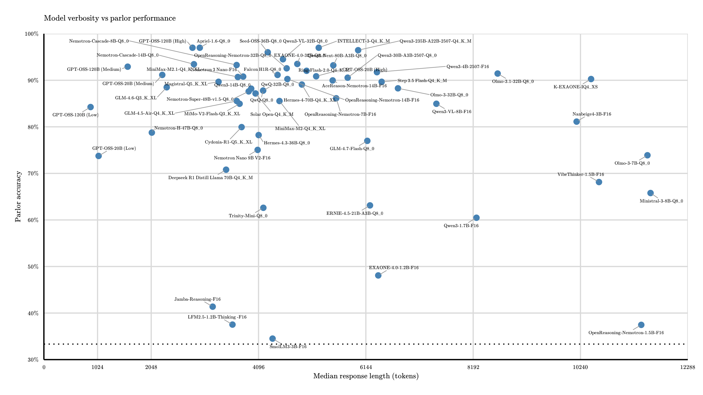
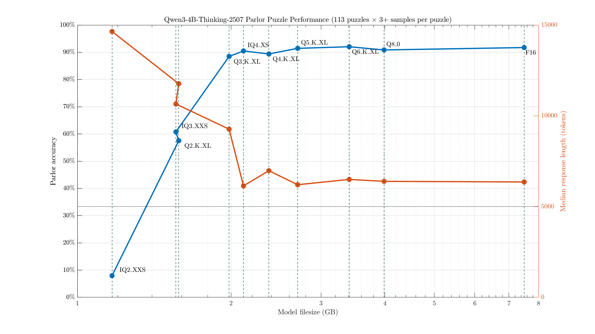

Blue Prince#
Blue Prince is a wonderful puzzle game that released not too long ago. In it, you draft rooms to explore a mansion, with its layout reforming each day. The rooms contain all kinds of layered puzzles, some more obvious than others.
One room I particularly enjoy is the "Parlor," a room containing an explicit puzzle reminiscent of the Knights and Knaves logic puzzle. We are given the following rules:
- There will always be at least one box which displays only true statements.
- There will always be at least one box which displays only false statements.
- Only one box has a prize within. The other 2 are always empty.
We can infer a few other properties. For example, the puzzle is expected to be solvable (we must be able to logically deduce a location). The truth of each box is not necessarily correlated with the gem prize within. Boxes may have multiple statements, and up to one box may have no statement at all.
Each time you draft the room, you get a new set of statements to solve. Opening the correct box rewards you with a few gems, which you can then use to assist you in your drafting that day.
Let's work through one example problem to get a sense for it:

The puzzles often look more intimidating than they actually are, once you start eliminating possibilities.
First, we do some quick word counting: B1 (the first blue statement) - 11 words, B2 - 10 words, W1 - 7 words, W2 - 3 words, K1 - 4 words. White is disagreeing with itself, so we can eliminate it as an all-true candidate. As both of its statements have an odd number of words, and at least one of them is false, B1 must also be false (and thus blue cannot be all-true).
Due to rule #1, that means the remaining box, black, must be our all-true box. We can open the black box and enjoy our prize.

For reference, this explanation took ~140 tokens, or 95 words. We don't actually have to think through the rest of the possibilities and assign truth values to the other statements/boxes, although that may be helpful as a means of double-checking our logic.
Some puzzles have multiple valid truth configurations, where each one points to the same box holding the prize.
Language Model Testing#
I've generally been experimenting with language models lately, with mixed feelings. I have not done this while playing the game (that'd be cheating!) but I wrote down each Parlor Puzzle I encountered after coming up with the idea and started testing a number of "reasoning" language models with the various configurations to see if they'd be able to figure it out as well. I ended up liking this test too much to leave it there, with just a few scattered manual tests on a small subset of the questions. So, I found a set of (likely) all the parlor puzzles in the game and hacked together something to test models on it properly.
It seemed like an interesting way of evaluating their abilities, ideally in a way that might dodge some of the typical "benchmaxxing." I doubt these puzzles have made it into the training data of any of these models.
Max response length was set to 24k tokens. Some response lengths are slight approximations due to the tools used. I wrote a standardized prompt that provides enough information to solve all the puzzle configurations.
The results, in short:
| Model | Parameters | Quantization | Parlors Puzzled | Score (% correct) | Avg/Median Response length |
|---|---|---|---|---|---|
| AI21 Jamba Reasoning | 3B | F16 | 113*4 | 41.4% | 3211/3221 tokens |
| Apriel 1.5 Thinker | 15B | Q8_0 | 113*3 | 94.4% | 5411/3592 tokens |
| Apriel 1.6 Thinker | 15B | Q8_0 | 113*5 | 97.0% | 4793/2975 tokens |
| Cydonia R1 (v4f) | 24B | Q5_K_XL | 113*3 | 79.9% | 6193/3773 tokens |
| DeepSeek-R1-Distill-Llama-70B | 70B | Q4_K_M | 113*3 | 70.8% | 3934/3477 tokens |
| ERNIE-4.5-21B-A3B-Thinking | 21B | Q5_K_XL | 113*3 | 68.1% | 6403/6396 tokens |
| Q8_0 | 113*3 | 63.1% | 6161/6223 tokens | ||
| EXAONE-4.0 | 1.2B | F16 | 113*3 | 48.1% | 6546/6381 tokens |
| EXAONE-4.0 | 32B | Q8_0 | 113*3 | 93.5% | 6133/4836 tokens |
| EXAONE-4.0.1 | 32B | Q8_0 | 113*3 | 92.6% | 6120/4500 tokens |
| K-EXAONE-236B-A23B | 236B | IQ4_XS | 113*1 | 90.3% | 11994/10442 tokens |
| Falcon-H1R | 7B | Q8_0 | 113*3 | 91.2% | 7060/4459 tokens |
| Gemini-2.5-Pro** (batch size 10) | ??? | ??? | 113*1 | 92.9% | ??? |
| Gemini-3-Pro** (batch size 10) | ??? | ??? | 113*1 | 93.8% | ??? |
| GLM-4.5-Air | 106B | Q4_K_XL | 113*3 | 85.6% | 5301/3681 tokens |
| GLM-4.6 | 355B | Q3_K_XL | 113*1 | 88.5% | 4321/2344 tokens |
| GLM-4.7 Flash | 30B | Q8_0 | 113*4 | 77.0% | 9013/6172 tokens |
| GPT-5-Thinking-Mini | ??? | ??? | 113*1 | 95.6% | 21.2/17 seconds |
| GPT-OSS-120B (Reasoning: high) | 120B | MXFP4 | 113*5 | 97.0% | 4001/2836 tokens |
| Hermes-4-70B | 70B | Q4_K_XL | 113*3 | 89.1% | 6085/4923 tokens |
| Hermes-4.3-36B | 36B | Q8_0 | 113*5 | 78.2% | 6691/4098 tokens |
| INTELLECT-3 | 106B | Q4_K_M | 113*5 | 97.0% | 6357/5245 tokens |
| LFM2.5-1.2B-Thinking | 1.2B | F16 | 113*5 | 37.5% | 3672/3599 tokens |
| Magistral-Small-2509 | 24B | Q5_K_XL | 113*3 | 89.7% | 4045/3333 tokens |
| Q8_0 | 113*6 | 87.5% | 4153/3620 tokens | ||
| MiMo-V2-Flash | 309B | Q3_K_XL | 113*1 | 85.0% | 6839/3735 tokens |
| MiniMax M2 | 229B | Q4_K_XL | 113*3 | 85.6% | 7203/4496 tokens |
| MiniMax M2.1 | 229B | Q4_K_XL | 113*2 | 90.7% | 5985/3702 tokens |
| Ministral-3-8B-Reasoning-2512 | 8B | Q8_0 | 113*3 | 65.8% | 13542/11577 tokens |
| Ministral-3-14B-Reasoning-2512 | 14B | Q8_0 | 113*5 | 44.8% | 19800/24000 tokens |
| MiroThinker-v1.5 | 30B | Q8_0 | 113*5 | 50.4% | 14589/15371 tokens |
| Mistral-Small-3.2-24B-Instruct-2506 (non-thinking reference) | 24B | Q5_K_XL | 113*4 | 74.1% | 1891/1749 tokens |
| Nanbeige4-3B-Thinking-2511 | 3B | F16 | 113*3 | 81.1% | 12173/10166 tokens |
| Olmo-3-7B-Think | 7B | Q8_0 | 113*6 | 73.9% | 12789/11518 tokens |
| Olmo-3-32B-Think | 32B | Q8_0 | 113*4 | 88.3% | 8573/6757 tokens |
| Olmo-3.1-32B-Think | 32B | Q8_0 | 113*3 | 91.4% | 9787/8659 tokens |
| Qwen3-235B-A22B-2507 | 235B | Q4_K_XL | 113*2 | 96.5% | 6922/5997 tokens |
| Qwen3-Next-80B-A3B | 80B | Q8_0 | 113*3 | 93.2% | 6781/5523 tokens |
| Ring-Flash-2.0 | 100B | Q4_K_M | 113*3 | 92.0% | 6604/5013 tokens |
| Seed-OSS-36B | 36B | Q4_K_XL | 113*2 | 96.0% | 5530/4610 tokens |
| Q8_0 | 113*2 | 96.0% | 5596/4272 tokens | ||
| SmolLM3 | 3B | F16 | 113*3 | 34.5% | 9720/4364 tokens |
| Solar Open | 100B | Q4_K_M | 113*4 | 87.2% | 6186/4039 tokens |
| Step 3.5 Flash | 196B | Q4_K_M | 113*3 | 89.7% | 8660/6466 tokens |
| Trinity Mini | 26B | Q8_0 | 113*4 | 62.6% | 6525/4188 tokens |
| VibeThinker-1.5B | 1.5B | F16 | 113*3 | 68.1% | 10655/10593 tokens |
Reported percentages are exact results, but you may assume the model's "true" score is somewhere around ±3% from those. Aside from Mistral Small, all models were tested using their thinking modes. A model with significantly higher mean response lengths than its median is more likely to have some responses where it got stuck in some kind of generation/reasoning loop.
Taking the top quant tested from each model, we might also try throwing them in some scatter plots:

This shows, approximately, performance relative to model size. I take the geometric mean of active & total parameters as an attempt to better place MoE models (although I have some concerns on how accurate that is). Dense models are placed as you'd expect. Here's the same chart with respect to just the total parameter count, if you're more concerned with the overall memory footprint:

Setting aside model size, we can also take a look at performance with respect to verbosity. Ideally, we'd want a model in the top left: high accuracy, few tokens to get there. GPT-OSS-120B most clearly occupies that spot.

Very approximately, it seems that past ~4-5k typical response tokens, more thinking tends to hurt performance.
Model Commentary#
Following are some thoughts on a few of these models.
Jamba 3B
Claims of this model outperforming Qwen3-4B seem to be quite overstated, at least by this test. It barely does better than random guessing, and was much worse than even the 1.7B Qwen on this task. Its responses were well-formatted English, so I doubt sampler settings could account for the discrepancy. I also have yet to see evidence of temperature being a crucial factor.
One response helpfully explained "Assuming the Blue box is telling the truth, then the Black box contains gems.[...]Thus the prize is in the Blue box." In one of the easiest puzzles, we have an even more local contradiction: "White box’s false claim “THIS BOX IS EMPTY” confirms it is not the prize container."
I'd also like to shout out their hilarious chart showcasing a 6% score on HLE for a 3B model. How insightful. (I'd expect most points earned in that range come from LLM judge errors.)
Apriel
1.5 did well overall, especially for its size. I still have major doubts about their big advertising point:
Achieves a score of 52 on the Artificial Analysis index and is competitive with Deepseek R1 0528, Gemini-Flash etc.
At least in terms of how much that generalizes to real usage. There's only so much you can fit in a ~15 GB model. (Note: this claim was in relation to the AA V3 scores, which may not align with their current numbers.)
The model's "[BEGIN FINAL RESPONSE]" formatting is annoying.
The 1.6 update scored even better: 97.0%. Its reasoning formatting was still irritating, to the point of making me not want to try using this model for other tasks, and it came up with more "unique" (bad) ways of displaying its answer than most models.
Cydonia R1
To be clear, this model seems to be a fine-tune of a non-reasoning model, adding reasoning with a focus on improving role-play performance. I included it in this test because I was curious if that added thinking would still improve performance on other subjects. It showed some improvement from Mistral Small, but was not on the level of Magistral.
EXAONE
The 1.2B version was a bit worse than Qwen3-1.7B, but it's also a bit smaller than the Qwen model.
I'm somewhat curious what really changed between 4.0 and 4.0.1 (their statement is that it's "a patch version to reduce unintended or inappropriate responses," whatever that means). While the score turned out slightly lower with 4.0.1, it's only two additional errors. I can't claim any detectable difference/dumbing down yet.
The newer 236B K-EXAONE model was quite disappointing (tested at IQ4_XS). It scored lower than the older 32B versions, had notable timeout issues, and scored similarly to 24-32B models on my non-reasoning knowledge test (those results not shown here).
**Gemini-2.5-Pro & Gemini 3
Take these results with a grain of salt! I tried sending these as sets of 10 puzzles at once, due to their tight usage restrictions and my lack of interest in paying subscriptions/per prompt. This has both positive and negative potential impacts on the results.
It is more to compute in one go, so token/reason limits could cause hard stops. The grouping of the questions (difficulty-wise) would also affect this. On the other hand, the model may be able to apply information/logic from one solution to another, or get additional context clues.
The model's true chain of thought is hidden, so we can't learn much about how it processes these. (For what it's worth, Gemini itself claimed it could probably handle 20-50 of these at once with 100% accuracy before its performance starts dropping. However, sets of 20 caused problems beyond the model's generation, so I reduced it to 10 per group. Obviously models don't actually understand their capabilities, but I technically have its approval, and even went easy on it :) )
Gemini 3 (Thinking) only scored marginally better (93.8% over 92.9%), and was still worse than GPT-OSS-120B with the same batch size (94.7%). As these are only based on a single run of the 113 puzzles, we can't reach overly strong conclusions, but it's a relatively disappointing score given the presumed size of these models.
GLM
GLM 4.6 has been by far the best-scoring model on my in-progress fact-based testing, and overall seems to give great results. Its answers were formatted more consistently than any other model. However, it and the 4.5-Air version scored quite horribly on this test, considering their size!
Perhaps there's some kind of logical reasoning focus in training this model neglected compared to its competitors. Some blame of course may go to the low quant on 4.6, though I can't imagine that explains everything (even the Q3_K_XL Qwen3-4B did alright compared to its F16 version). See also the INTELLECT-3 model trained on 4.5-Air.
GPT-5-Thinking-Mini
This is the "thinking" model you get some access to without spending money. Of course, it has some advantages such as speed (vs most hardware) and decent accuracy, but was hardly PhD-level.
This model's chain-of-thought is hidden, so I can't truly verify if it "cheated" by using python/websearch/other tools to solve some problems. This is also why I can only offer average thinking time as a response length metric.
GPT-OSS
The reasoning effort setting gives us a whole bunch of configurations, so I've copied over its best result and included the rest here:
| Model | Effort | Parameters | Parlors Puzzled | Score (% correct) | Avg/Median Response length |
|---|---|---|---|---|---|
| GPT-OSS-20B | Low | 20B | 113*3 | 73.7% | 1242/1044 tokens |
| Medium | 20B | 113*3 | 91.2% | 3828/2259 tokens | |
| High | 20B | 113*3 | 90.9% | 7836/5196 tokens | |
| GPT-OSS-120B | Low | 120B | 113*5 | 84.2% | 1042/891 tokens |
| Medium | 120B | 113*5 | 92.9% | 2168/1599 tokens | |
| High | 120B | 113*5 | 97.0% | 4001/2836 tokens | |
| 120B** (batch size 10) | High | 120B | 113*1 | 94.7% | 3721 avg tokens |
GPT-OSS-20B actually performed (by 1 question) worse on "high" than on "medium." This could largely be attributed to the token limit: "medium" timed out ~3 times, while "high" timed out ~10 times. As the limit was a rather generous 24000 tokens and these puzzles are not that complicated, fundamentally, I'm not sure how much adding more tokens would help. The 120B model's high setting performed much better with a 97%, and is one of the best performances.
It's also notably a better score than the GPT-5-Thinking-Mini model, which is limited to ~10 messages every few hours without paying. The OSS models lack certain features (image recognition) and would need setup for others (tool integration), but are surprisingly competitive for this sort of task. Just make sure it's set to high, and make sure it's actually listening to that setting.
**In connection with the Gemini-2.5-Pro batched test, I ran a set on GPT-OSS-120B, to get a sense for just how cruel asking a model to solve ten of these in one go is. In this case, I loaded the model with max context and removed any response length limit. Reasoning: high, of course. I was not expecting it to scale this well, and it even managed to beat Gemini-2.5-Pro with this setup. (Of course, with the limited sample size, I can't definitively claim GPT-OSS is truly better on this task - but it's at least competitive. Gemini-2.5-Pro certainly has advantages and better performance on a number of other subjects.)
I have some other reasons to dislike these models for many uses, but I am quite pleased with how they did here. The "derestricted" version of GPT-OSS-120B scored 96.9% after a run of 8 attempts per puzzle (reasoning high), effectively the same result. It did use ~20% more tokens on average.
{kind=link}
INTELLECT-3
This is a modification of GLM-4.5-Air, apparently oriented towards math/coding/reasoning. As far as this test is concerned, they were absolutely successful: GLM Air's disappointing 85% was improved to 97%, tying GPT-OSS-120B at high effort/Apriel 1.6.
Its reasoning length is a bit longer than GPT-OSS.
I may test this model more in other areas in the future, but cannot immediately comment on if any other areas have suffered as a result of this training.
MiniMax M2
What particularly caught my eye here was the IQ2_XXS quantization of the full model (~74 GB), contrasted with the IQ4_XS quantization (~74.5 GB) of a 40% REAP by Cerebras. Parlor puzzling is hardly a comprehensive evaluation of a model, but I was curious to see which one would perform better: either configuration should be fast on a 4x3090 system, or a little slower on something like a 5090+64 GB RAM. Going for Q4+ on the full 229B model is much harder to manage, with the model weights alone taking up 130+ GB.
| Model | Parameters | Quantization | Parlors Puzzled | Score (% correct) | Avg/Median Response length |
|---|---|---|---|---|---|
| MiniMax M2 | 229B | IQ2_XXS | 113*5 | 72.0% | 9454/5178 tokens |
| Q2_K_XL | 113*4 | 75.0% | 8053/4641 tokens | ||
| Q4_K_XL | 113*3 | 85.6% | 7203/4496 tokens | ||
| MiniMax M2 (40% REAP) | 139B | IQ4_XS | 113*5 | 88.3% | 7398/4510 tokens |
| MiniMax M2 (25% REAP) | 172B | Q3_K_XL | 113*5 | 85.3% | 8235/5393 tokens |
| MiniMax M2.1 | 229B | Q4_K_XL | 113*2 | 90.7% | 5985/3702 tokens |
All configurations tested were relatively prone to get stuck in an infinite reasoning loop, causing many of their errors.
Unfortunately, even the full Q4 model was not very good at these puzzles. This was relatively surprising given its high "intelligence index" score (which tends to heavily favor math/reasoning-type models) and its overall focus on being a reasoning/STEM model. Its relatively low active parameter count (10B) also is not a satisfactory explanation: on the extreme end of the size scale, MiniMax's parlor score is right between Nanbeige4 (3B total params) and Qwen3-4B-Thinking (4B total params). If we were to set aside all the times it hit the token limit, its score on the remaining questions is a bit better (~91%), but that's still not an excellent score and applying the same standard to Ministral-3-14B would give it a score of ~94%.
Somehow, the 40% REAP version (Q4) scored slightly better than the regular Q4. The 25% (Q3) REAP was also competitive with the full Q4, making them look like a decent option vs the standard IQ2_XXS or Q2_K_XL quants.
I may try experimenting with this model more in the future, as the low active parameter count make even the proper Q4 run at a decent speed off of RAM, but for now, I can't tell you exactly why the scores are as listed. The 2.1 update seems reasonable, bringing its score into a more respectable region while also using fewer tokens.
MiroThinker
This model is based off Qwen 30B/235B to act as a search agent. I only tested the 30B version. Solving parlor puzzles (without websearch) thus will not be a very useful test of its capabilities in that domain. So, while I would not want to use this score to judge the model's value overall, I still found it interesting to compare performance here vs the base model.
Mistral Small/Magistral/Ministral
Mistral Small is quite good! It's one of my preferred options in the ~20-30B size range.
I include it here, and excuse its low score, just to illustrate the difference reasoning makes on a problem like this. Naturally, its average response length/tokens used was much lower. On my short-form tests, I did not find reasoning models to have a significant advantage on answering those factual questions (based on separate less formal tests; the linked data is only on non-reasoning models). In other words, I would argue a (perhaps rather obvious) interpretation: reasoning models perform better at reasoning tasks, but are not necessarily superior in general.
Ministral 3 (8B & 14B) were truly awful. They frequently ran out of tokens despite the 24k limit, used more tokens in general than any other model, only followed formatting directions about half the time, and were inconsistent in their reasoning formatting. These problems absolutely should not need that many tokens to solve. I may update this section and test the 3B version if there turns out to be some template fixes or similar, but my expectations are low based on the Dec 02 quantizations. These issues largely relate to the reasoning process, so I can't make any particular comments about the quality of the instruct versions of these models.
Ministral 14B had a decent score (~94%) on the questions it didn't time out on, but even that's ignoring the errors it made in formatting its thinking/response. Also, the questions it timed out on made up more than half the attempts. Not something you can just sweep over. I tried several tweaks (llama.cpp versions, temperature, flags, system prompt) with no substantial changes to these bad behaviors. Some uncapped test generations took over 40k tokens.
Nvidia models
Nvidia has a whole bunch of models, especially code/math reasoning ones. I don't necessarily know which are the most promising to begin with, but here's what I've tested so far:
| Model | Parameters | Quantization | Parlors Puzzled | Score (% correct) | Avg/Median Response length |
|---|---|---|---|---|---|
| AceReason-Nemotron-14B | 14B | F16 | 113*3 | 90.0% | 6558/5511 tokens |
| Llama-3.3-Nemotron-Super-49B-v1.5 | 49B | Q8_0 | 113*1 | 87.6% | 5555/3908 tokens |
| Nemotron Cascade 8B | 8B | Q8_0 | 113*5 | 93.3% | 5201/3678 tokens |
| Nemotron Cascade 14B | 14B | Q8_0 | 113*10 | 93.5% | 4325/2863 tokens |
| Nemotron-H-47B-Reasoning | 47B | Q8_0 | 113*3 | 78.8% | 2798/2060 tokens |
| Nemotron Nano 9B v2 | 9B | F16 | 113*5 | 75.0% | 5167/4079 tokens |
| Nemotron 3 Nano | 30B | IQ4_XS | 113*10 | 89.0% | 7051/4333 tokens |
| Q4_K_XL | 113*10 | 91.2% | 6513/3833 tokens | ||
| Q8_0 | 113*10 | 90.5% | 6213/3760 tokens | ||
| BF16 | 113*10 | 90.8% | 6253/3803 tokens | ||
| OpenReasoning-Nemotron-1.5B | 1.5B | F16 | 113*3 | 37.5% | 11336/11400 tokens |
| OpenReasoning-Nemotron-7B | 7B | F16 | 113*3 | 86.1% | 7405/5578 tokens |
| OpenReasoning-Nemotron-14B | 14B | F16 | 113*3 | 90.3% | 6118/4647 tokens |
| OpenReasoning-Nemotron-32B | 32B | Q8_0 | 113*5 | 92.6% | 5857/4633 tokens |
Overall, they don't look particularly revolutionary. Due to its speed, I ran the Nemotron 3 Nano with a few more attempts than usual per question. As seems to be typical, going above Q4 had no clear benefit.
The Nemotron Cascade model was most impressive: low token usage, decent score, and only 14B parameters. Its formatting was consistent, and never timed out.
Seed OSS 36B
Very nice! Its 96% is one of the better scores, also beating the online GPT-5-Thinking-Mini.
Total score was unchanged between its Q4/Q8 quants.
Its score on my non-thinking/fact-based benchmark was about typical for its size.
Qwen3 models
There's a lot of these, so I've moved them to this table (keeping a few of the notable ones duplicated above). Qwen3-235B-A22B-Thinking-2507 is the current best, with a score of 96.5%, though only based on two passes.
| Model | Parameters | Quantization | Parlors Puzzled | Score (% correct) | Avg/Median Response length |
|---|---|---|---|---|---|
| Qwen3-1.7B (thinking) | 1.7B | F16 | 113*3 | 60.5% | 8203/8255 tokens |
| Qwen3-4B-Thinking-2507 | 4B | F16 | 113*3 | 91.7% | 7481/6356 tokens |
| Qwen3-14B (thinking) | 14B | Q8_0 | 113*3 | 88.2% | 5661/3956 tokens |
| Qwen3-30B-A3B-Thinking-2507 | 30B | Q4_K_XL | 113*4 | 90.3% | 7092/5819 tokens |
| Q8_0 | 113*3 | 90.6% | 7023/5797 tokens | ||
| Qwen3-235B-A22B-2507 | 235B | Q4_K_XL | 113*2 | 96.5% | 6922/5997 tokens |
| Qwen3-VL-2B-Thinking | 2B | F16 | 113*5 | 46.4% | 17748/19845 tokens |
| Qwen3-VL-8B-Thinking | 8B | F16 | 113*5 | 85.0% | 9984/7490 tokens |
| Qwen3-VL-32B-Thinking | 32B | Q8_0 | 113*5 | 94.5% | 5762/4562 tokens |
| Qwen3-Next-80B-A3B | 80B | Q6_K_XL | 113*5 | 93.5% | 6744/5472 tokens |
| Q8_0 | 113*3 | 93.2% | 6781/5523 tokens | ||
| QwQ-32B | 32B | Q8_0 | 113*5 | 87.8% | 5629/4184 tokens |
1.7B, VL-2B: I recommend using at least slightly larger models than this.
4B: This model was small and promising enough to test a range of its quantizations, which may be easier to review visually:

Interestingly, we see similar results to my factual LLM testing, with almost no noticeable change in performance until the 3-bit quants. Note that the IQ2_XXS model does worse than random guessing, mostly because it usually failed to produce any answer at all. It tended to get stuck somewhere in the reasoning process, and loop with text like "But wait" until running out of tokens.
However, I would advise some caution for general use: there's only so much knowledge that can be fit in 2 GB, and ultimately there's a lot of implicit/explicit knowledge required to best answer tasks. Being good at evaluating true/false statements is an excellent skill for a model to have, but is not the whole story. For example:
- Suppose you want a summary of a video about D-Day. A more knowledgeable model is more likely to be able to catch minor errors in the video's timeline, and may have better follow-up reading suggestions.
- Suppose you wanted to discuss a movie you just saw. A bigger model has better odds of knowing the characters and plot details.
Supporting a model with RAG/web search/similar tech can also only do so much. Models cannot actually reflect on their own knowledge, and may not reliably use these tools when they truly need to.
In my more fact-based testing, the instruct version of this model scored around 45%. (Thinking, in general, showed no major improvement on those tests.) Certainly not a bad score for its size, but a number of 7-14B models did noticeably better, and are not that much harder to run.
I also tested this "Gemini 2.5 Pro distill" of Qwen3-4B. It is absolutely worthless - 38.9% after 3 sets of all 113 questions. Notably, it seemed to be trained on the thought summaries of 2.5-Pro, which is... not a good idea. It made the thinking shorter (about 1.3k tokens/response) at the cost of all accuracy. Bad implementations aside, I'm quite doubtful of distills in general: LLM output tends to be rather low quality (making it bad training data), and if there was some easy extra training/modifications you could do to make a model smarter, its creators probably would have figured that out and done it already. It's not included on the tables/charts as I don't consider it a legitimate model.
For another example with a different base, this Llama3.3 8B finetune with "Claude 4.5 Opus High Reasoning" data was even worse: ~25% score after letting it run each question 5 times. Completely incompetent. Though the poor "example" prompts on that page should also have warned you that something's up.
Qwen3-Next: my impressions so far are that GLM-4.5-Air has a bit of an edge for instruct/general capabilities, and GPT-OSS-120B has an advantage in reasoning tasks. That said, it's relatively competitive with both despite the size disadvantage. Its knowledge cutoff seems better than most models I've tested so far, which can be very nice.
Conclusion and notes#
In a way, this class of puzzle seemed not too hard for most reasoning models. Random guessing should score around 33%, while even the 4-billion parameter Qwen thinking model did reasonably with scores around 90-92%. The best models made about half as many errors, with scores around 95-97%. However, even these scores are not particularly impressive compared to human performance.
These parlor puzzles are a small subcomponent of Blue Prince. The game is intended for a relatively general audience, and these parlor puzzles are meant to be solvable by most such players without exerting tremendous effort. It would be a bad gameplay experience, after all, if you regularly faced a 30-minute diversion on a maddeningly complex puzzle that wasn't even relevant in the grand scheme of the game's mysteries. Solutions are also typically easy for a human to verify: incorrect answers tend to produce at least some kind of blatantly impossible configuration. LLMs were less successful with identifying these issues.
So, I would argue our score expectation for a "properly intelligent" solver should be more in the range of 100%. None of these models are there, at least for now. If you have time to think it through, I recommend doing so and not asking ChatGPT to play the game for you.
I intend to keep this updated as new reasoning models release. It at least seems useful for detecting some under-performing small reasoning models making big claims about their genius.
The language model thinking traces were never particularly elegant or efficient. Brute force tactics were common, and necessarily true/false boxes were regularly revisited. Of course, you could argue that how intelligent the reasoning trace appears is irrelevant: if the final answer is correct, that's all that really matters (and is all I graded on). Although, seeing the circles these models sometimes spun in, I would still hope for future developments to improve reasoning token efficiency.
Some statements gave models more trouble than others, on average. Nothing too surprising given standard LLM limitations: self-referential, "subjective," and counting statements were the typical culprits. Examples:
- This puzzle is harder than it seems
- This statement is of no help at all
- Every statement with the word 'blue' is false
- All statements that contain more than one 'B' are true
I have yet to see notable differences in performance between Q4 and higher models.
I slightly adjusted one parlor puzzle which, under a certain set of assumptions, would be ambiguous. All responses used a basic automatic detection followed by manual review to ensure all scores are correct.
Ultimately, you should consider playing Blue Prince. It's a beautiful game.